← Back to photography
Photography · Karachi, Pakistan · Jun – Jul 2015
Route No. 20
An observational photography series shot on Karachi's No. 20 bus route.
These photos were taken as part of an observational photography challenge given to me by my photography mentor Nadir Toosy, to capture things that I see in my daily commute while interning with him.
I chose to create this series as an ode to the many characters I saw while traveling using the Karachi Bus Network, specially its No. 20 bus route. Most photos were taken as quick snapshots, sneaked in unnoticed through my Motorola Droid Mini phone.
All photos taken between June and July of 2015.
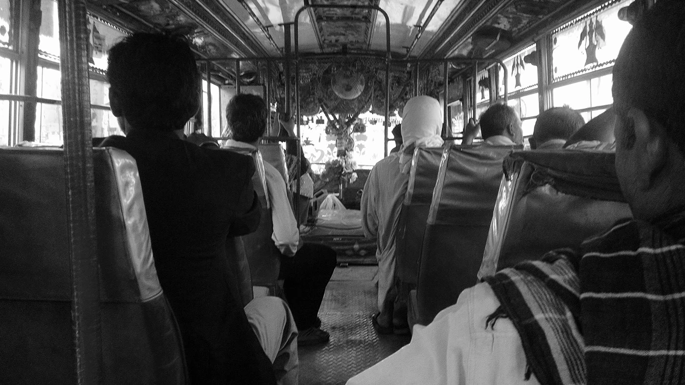
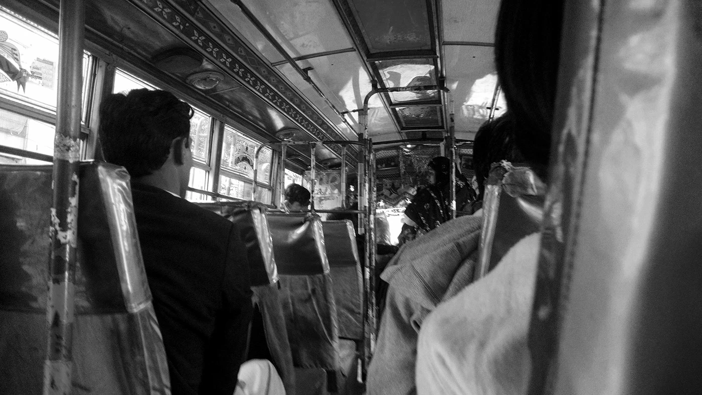
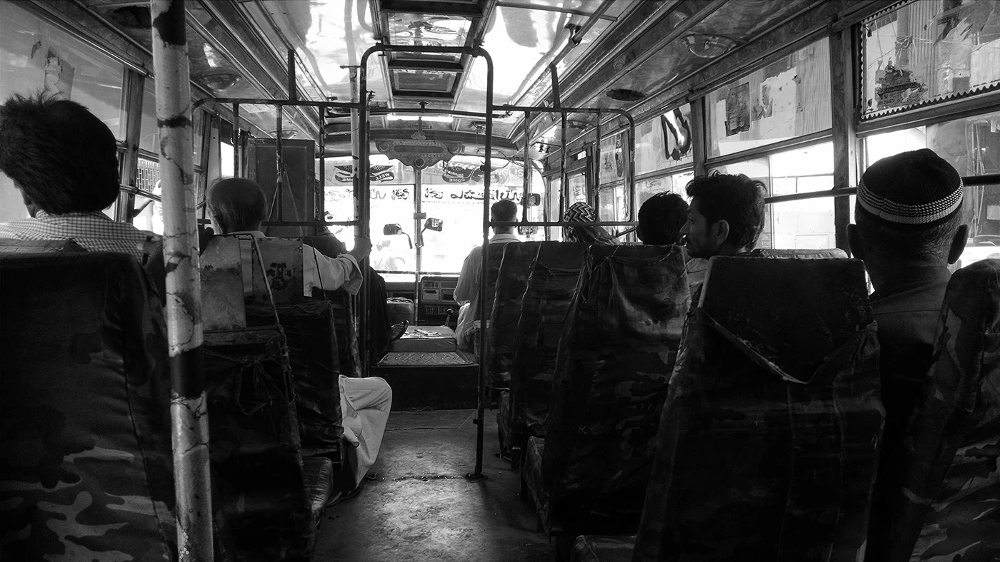
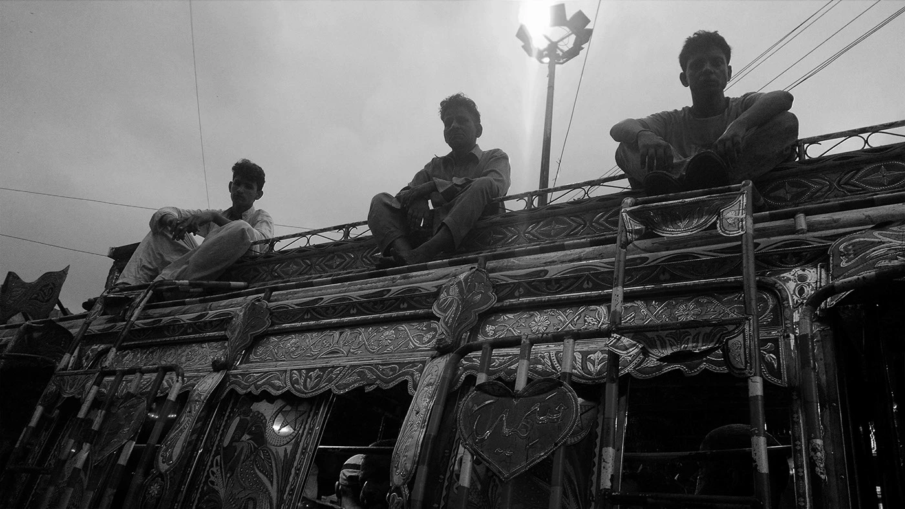
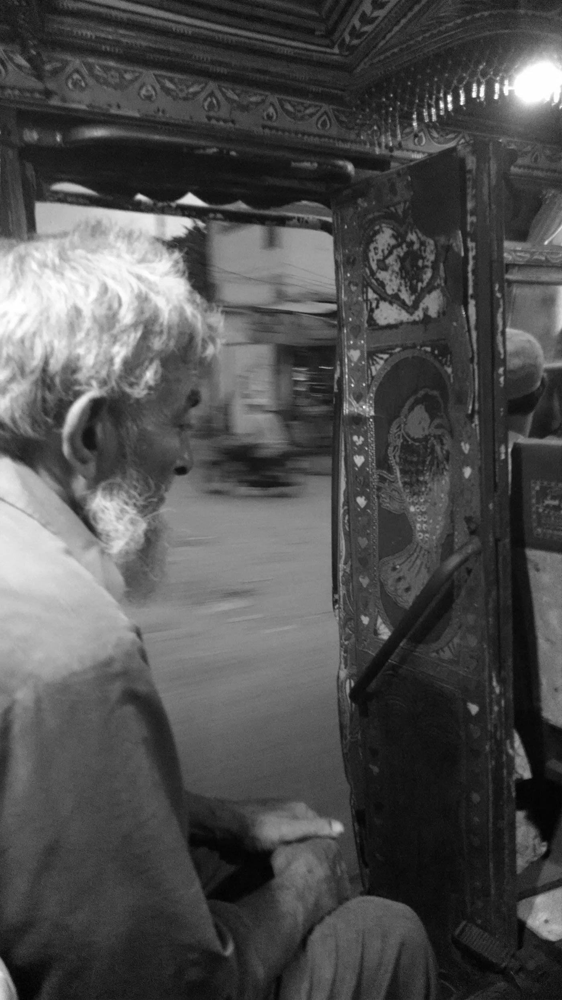
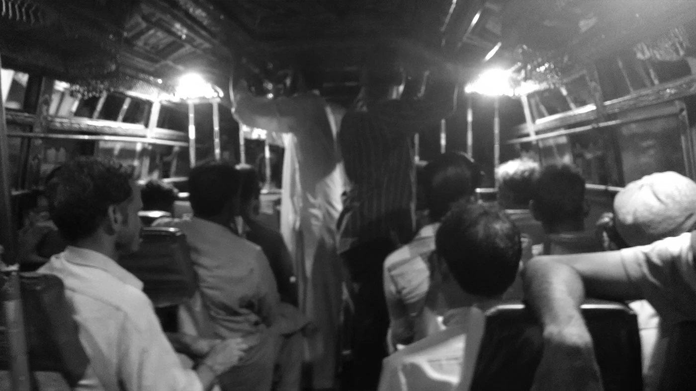
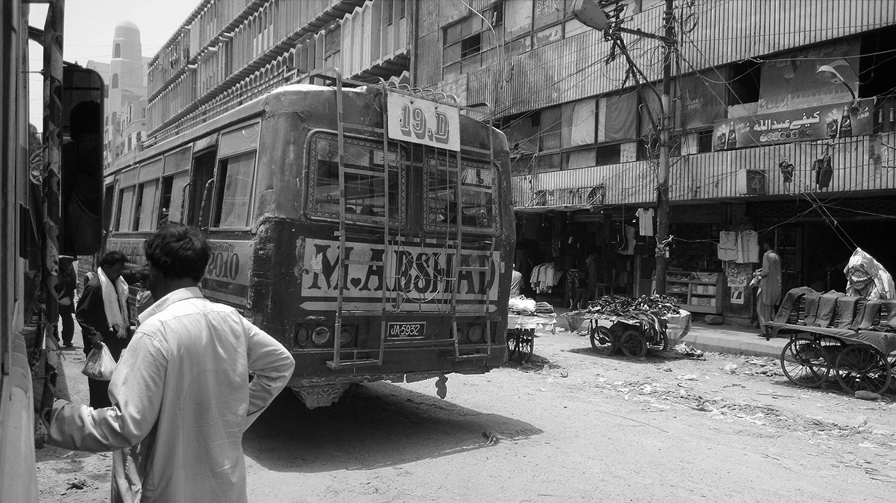
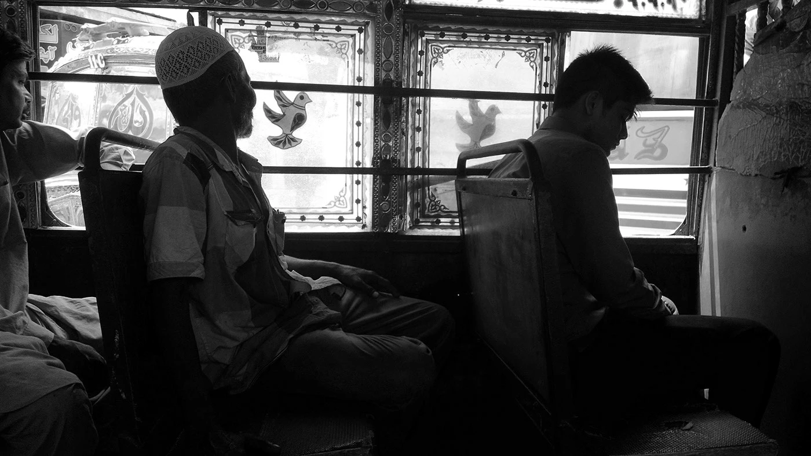
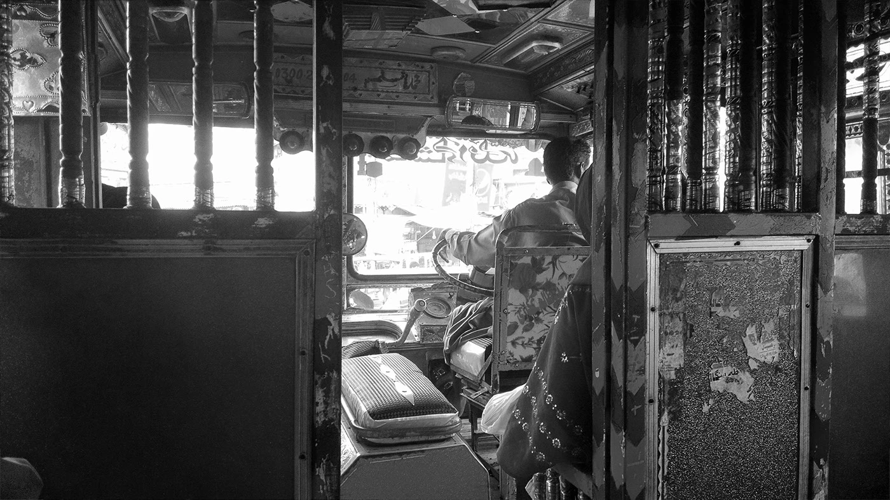
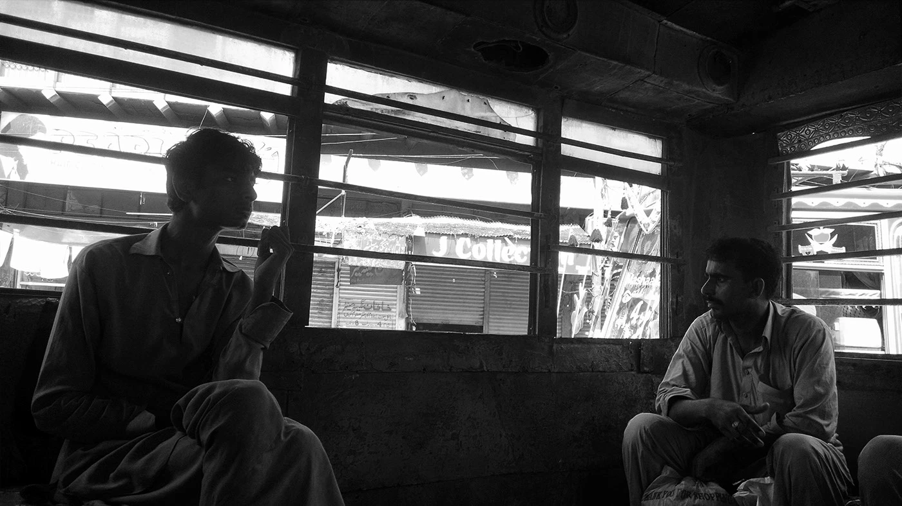
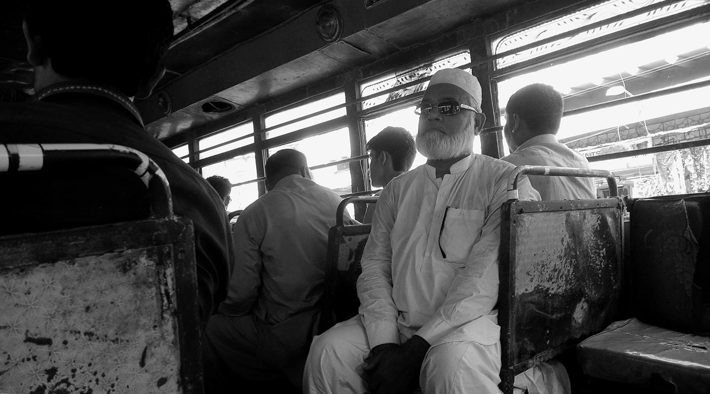
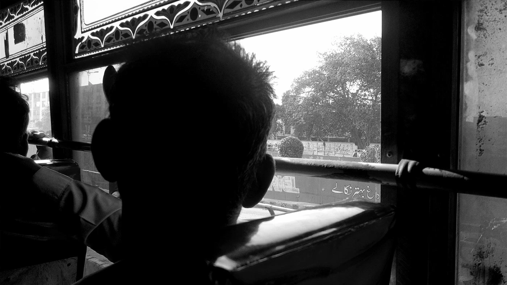